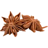

Correspondence Grimoire
Colic

Star Anise Essential OilColic: pain due to contraction of the involuntary muscle of the abdominal organs.
Colic Therapeutic Index
Definition
Colic is acute, cramping abdominal pain caused by spasm of the smooth muscle of the digestive tract or other visceral organs. The pain comes in waves and is usually accompanied by bloating, trapped wind, restlessness, and the urge to draw the knees up or curl forward. Causes range from dietary upset, trapped gas, and irritable bowel through to gallbladder or kidney stress, and in infants from an immature digestive system. Aromatic massage works alongside the body's own carminative and antispasmodic responses to soothe the spasm and let the digestive tract settle.
Indicated Oils
Application Methods
Massage: Dilute 4 to 6 drops of essential oil per ounce of carrier oil and apply with slow, warm, clockwise strokes across the abdomen, following the natural path of the colon. The combination of warmth, gentle pressure, and aromatic absorption eases the spasm, helps trapped wind move, and supports peristalsis. For infants and small children, use only the gentlest oils (traditionally Roman Chamomile, Lavender, and Dill Seed in nursery preparations) and dilute much more conservatively, around 1 drop per ounce of carrier.
Suggested Blends
General Colic Massage Oil
- 3 drops Roman Chamomile Essential Oil
- 2 drops Sweet Marjoram Essential Oil
- 2 drops Lavender Essential Oil
- 1 drop Ginger Essential Oil
- 1 oz carrier oil
Wind & Flatulent Colic Massage Oil
- 3 drops Sweet Fennel Essential Oil
- 2 drops Caraway Essential Oil
- 2 drops Coriander Seed Essential Oil
- 1 drop Peppermint Essential Oil
- 1 oz carrier oil
Spasmodic Colic Massage Oil
- 3 drops Calamintha Essential Oil
- 2 drops Roman Chamomile Essential Oil
- 2 drops Clary Sage Essential Oil
- 1 drop Cardamom Essential Oil
- 1 oz carrier oil